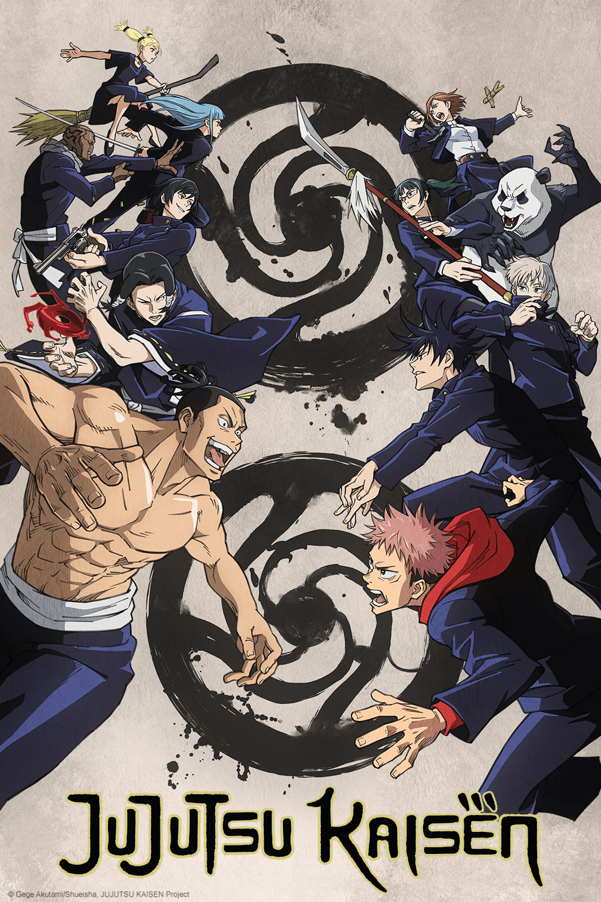
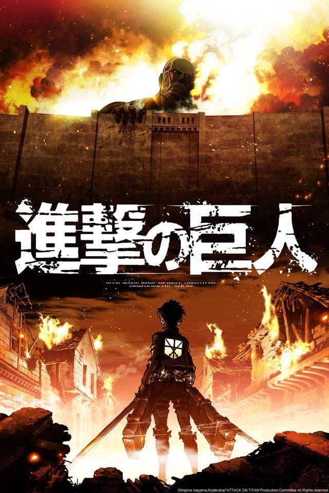

Anime de gen Shonen:

JUJUTSU KAISEN
În Jujutsu Kaisen, toate ființele vii emană o energie numită Energie blestemată (呪力, Juryoku), care provine din emoțiile negative care curg în mod natural prin corp. Oamenii normali nu pot controla acest flux în corpul lor. Ca urmare, ei pierd continuu Energie Blestemată, ceea ce duce la nașterea Blestemelor (呪い, Noroi), o rasă de ființe spirituale a căror dorință principală este de a aduce prejudicii umanității. Vrăjitorii Jujutsu (呪術師, Jujutsushi, lit. "Maeștrii Tehnicii Blestemate" sau "Șamanii") sunt persoane care controlează fluxul de Energie Blestemată din corpul lor, permițându-le să o folosească după bunul plac și, de asemenea, să reducă eliberarea acesteia. Vrăjitorii și Blestemații de rang înalt pot rafina această energie și o pot folosi pentru a executa Tehnici Blestemate (呪術式, Jujutsushiki), care tind să fie unice pentru utilizator sau pentru familia acestuia. O formă avansată a Tehnicii Blestemate este Expansiunea Domeniului (領域展開, Ryōiki Tenkai), prin care utilizatorul își poate folosi Energia Blestemată pentru a construi o dimensiune de buzunar care acoperă zona înconjurătoare în interiorul căreia toate atacurile vor fi mai puternice.

În Jujutsu Kaisen, toate ființele vii emană o energie numită Energie blestemată (呪力, Juryoku), care provine din emoțiile negative care curg în mod natural prin corp. Oamenii normali nu pot controla acest flux în corpul lor. Ca urmare, ei pierd continuu Energie Blestemată, ceea ce duce la nașterea Blestemelor (呪い, Noroi), o rasă de ființe spirituale a căror dorință principală este de a aduce prejudicii umanității. Vrăjitorii Jujutsu (呪術師, Jujutsushi, lit. "Maeștrii Tehnicii Blestemate" sau "Șamanii") sunt persoane care controlează fluxul de Energie Blestemată din corpul lor, permițându-le să o folosească după bunul plac și, de asemenea, să reducă eliberarea acesteia. Vrăjitorii și Blestemații de rang înalt pot rafina această energie și o pot folosi pentru a executa Tehnici Blestemate (呪術式, Jujutsushiki), care tind să fie unice pentru utilizator sau pentru familia acestuia. O formă avansată a Tehnicii Blestemate este Expansiunea Domeniului (領域展開, Ryōiki Tenkai), prin care utilizatorul își poate folosi Energia Blestemată pentru a construi o dimensiune de buzunar care acoperă zona înconjurătoare în interiorul căreia toate atacurile vor fi mai puternice.
ATTACK ON TITAN
Firul narativ al animeu-lui Attack on Titan se concentrează pe o civilizație de oameni ce locuiau în interiorul a trei ziduri, aceasta fiind singura locație în care oamenii pot trai în siguranță. În urmă cu 100 de ani, umanitatea aproape a fost dusă la dispariție din cauza apariției Titanilor, care atacă și mănâncă oamenii pe care îi văd.Ultimele rămășițe ale omenirii, s-au retras în spatele a trei ziduri, unde au trait pașnic timp de aproximativ un secol.Ca raspuns împotriva titanilor, armata națională a creeat un echipament de manevrare 3D, ce constă într-un set de curele ce se legau în jurul corpului,avănd legate la mâini niște carlige de agățare, alimentate de către un gaz de propulsie, ce îi ajută pe soldați să se miște mai rapid în aer, în timpul luptei cu Titanii.
Firul narativ al animeu-lui Attack on Titan se concentrează pe o civilizație de oameni ce locuiau în interiorul a trei ziduri, aceasta fiind singura locație în care oamenii pot trai în siguranță. În urmă cu 100 de ani, umanitatea aproape a fost dusă la dispariție din cauza apariției Titanilor, care atacă și mănâncă oamenii pe care îi văd.Ultimele rămășițe ale omenirii, s-au retras în spatele a trei ziduri, unde au trait pașnic timp de aproximativ un secol.Ca raspuns împotriva titanilor, armata națională a creeat un echipament de manevrare 3D, ce constă într-un set de curele ce se legau în jurul corpului,avănd legate la mâini niște carlige de agățare, alimentate de către un gaz de propulsie, ce îi ajută pe soldați să se miște mai rapid în aer, în timpul luptei cu Titanii.